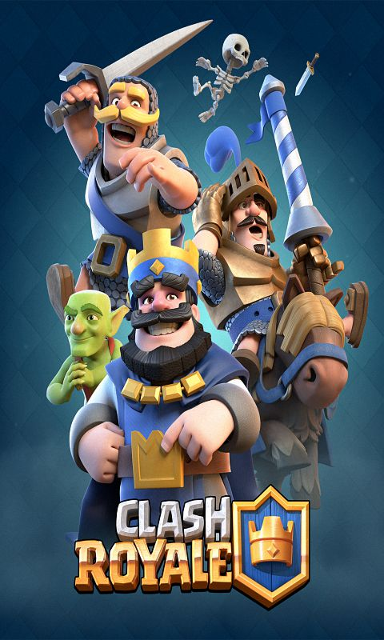

|
玩家可以从自己的牌库中选择8张卡牌来组成玩家自己的“出战卡组”，玩家最多可以保存十套出战卡组，然后选择一套想要出战的卡组。 在对战界面点击“对战”搜索对手，匹配系统会为玩家搜寻与玩家奖杯数相近的其他玩家，玩家拥有的卡牌数等级并不会影响对战匹配。 对战开始，被选入出战卡组中的卡牌会随机出现在卡槽中（卡槽中会同时出现四种卡牌，卡槽旁会显示下一张将出现的卡片），每位玩家初始会拥有5滴圣水（圣水随时间增长，最多储存10滴圣水），召唤不同的卡牌会消耗数量不等的圣水。 对战时，拖动卡牌，消耗圣水将卡牌召唤到阵地上进行战斗，前期只能召唤在己方阵地上，如果推掉敌人两翼的公主塔可以将召唤范围扩大。 双方阵地各有1座国王塔和2座公主塔，摧毁1个公主塔，获得1个皇冠，摧毁国王塔（主塔），获得全部3个皇冠。所有游戏模式最长持续时间为5分钟。第1、2分钟为1倍圣水，第3、4分钟2倍圣水。加时赛持续2分钟，加时赛为突然死亡模式（摧毁对方塔会直接获得对战胜利），加时赛最后1分钟将变为3倍圣水。 5分钟结束后，进入决胜时刻：在对战结束时，单座皇家塔生命值最低的一方将输掉对战。 |
 |